2026-10-11 · phase 0 · status everything soldered; nothing bench-tested yet
The whole puck is now soldered together: LiPo → TP4056 → slide switch → BS02 V4 boost →
S3, with the OLED, mic, microSD reader and record button all wired to the S3. It has not
been powered up on the battery, and the SD reader has no card in it, so none of this is
validated yet.
Wiring the full set exposed that the pin plan on paper wasn't the one I actually wanted.
The microSD reader moved from GPIO7–10 to GPIO10–13 and the OLED from
GPIO11/12 to GPIO8/9. Both now sit on the ESP32-S3 Arduino core's default
SPI and I2C pins, so the firmware won't need pin arguments. The button stays on GPIO1, the
mic on GPIO4/5/6. One consequence: the v0.1 sketch was written against the old pins and
has to be re-pinned before the first flash.
The boost converter is a BS02 V4, with its A/B solder pads set for 5V (the silkscreen
has the jumper table). The mic, OLED and SD reader all run off the S3's 3V3 pin, with the
OLED's ground taken from the booster. The slide switch sits on the TP4056's OUT+ line
upstream of the booster, so charging works with the device switched off.
The full map is in the diagram below: every GPIO, both rails, and the power chain. The
matching tables are in hardware/pinout.md.
Before first power-up, in order: measure the booster's output for 5V and check the A/B
bridges under magnification; check the Waveshare schematic for what happens when USB-C is
plugged in while the booster is driving the 5V pin; then re-pin and flash the sketch. If
the SD card is flaky when it arrives, the reader may need 5V instead of 3V3.
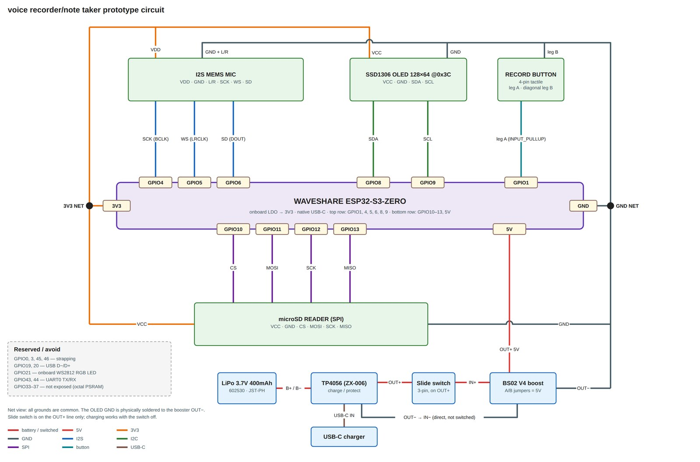
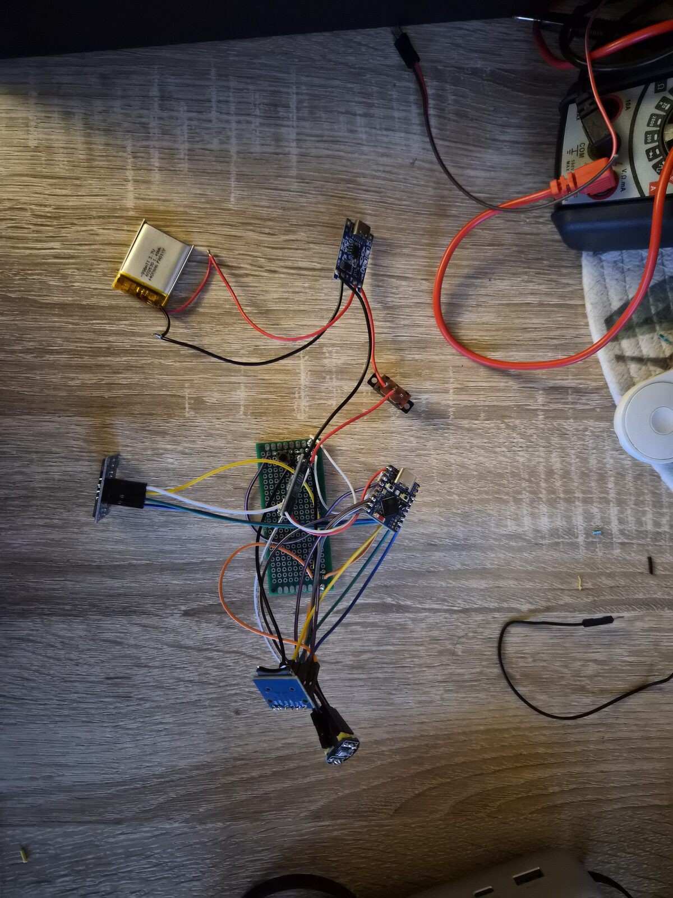
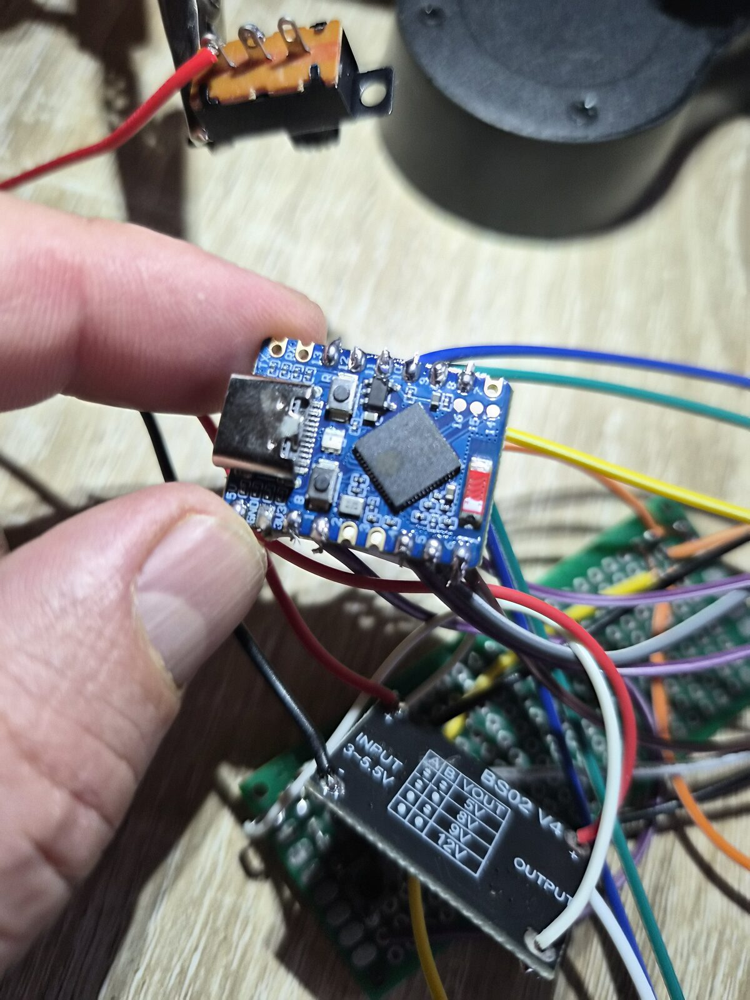
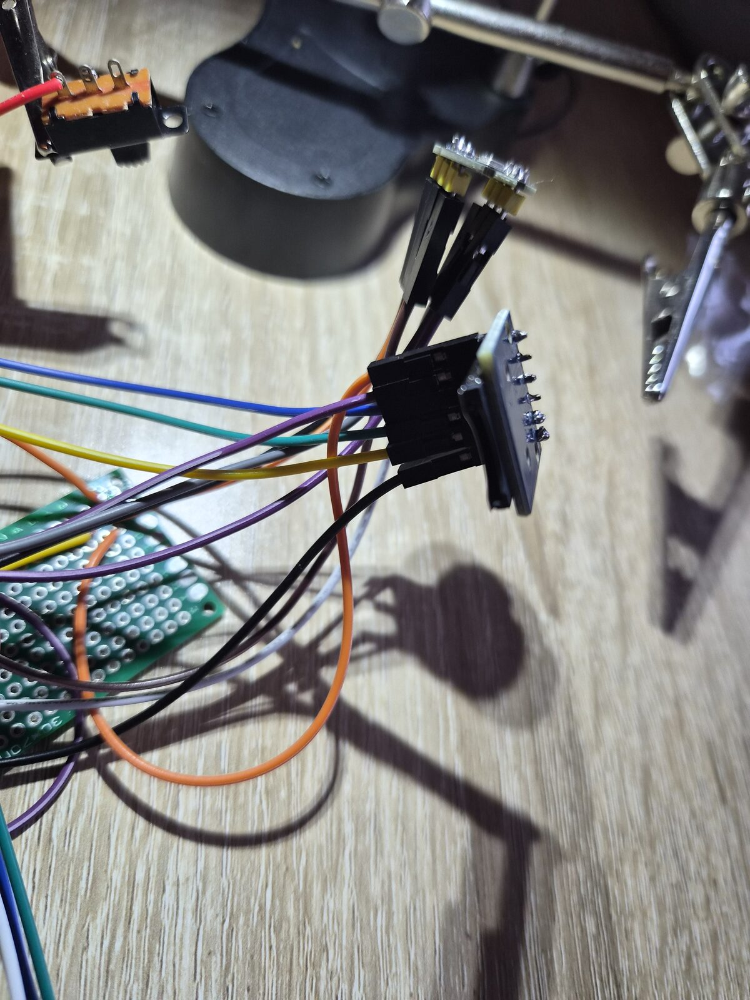
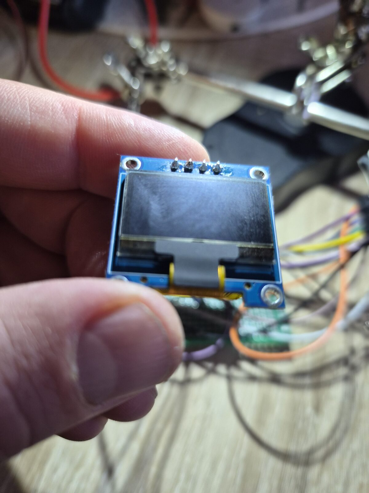
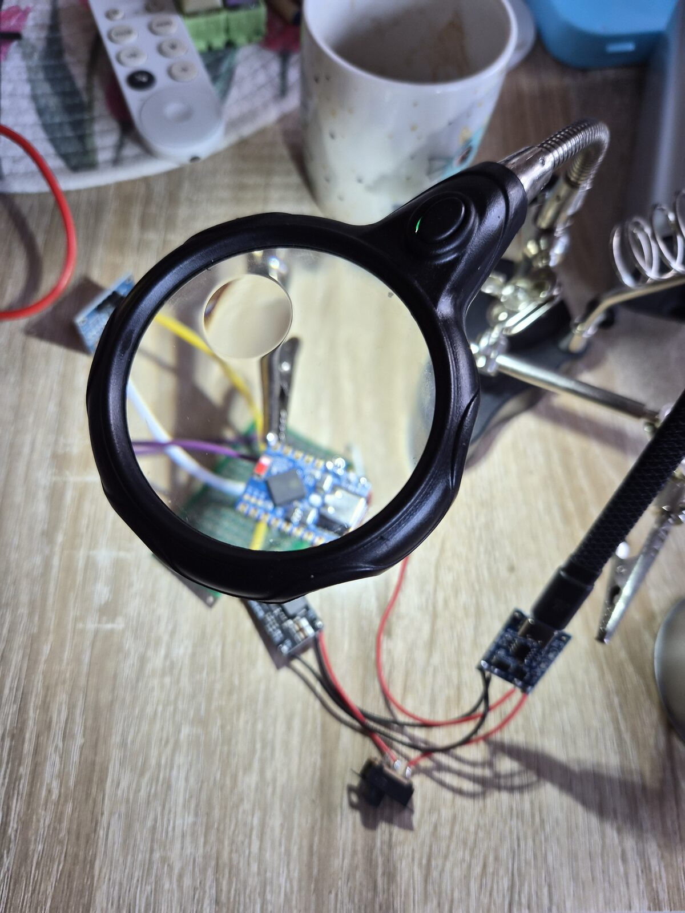
2026-09-06 · phase 0 · status paper only — no change to the hardware
Sat down with the Supernote and drew the thing rather than describing it. Three passes on
one page: the outside, the wiring, and the inside.
Outside. A puck. Mic grille and the record button on the top face, display
next to them, and everything else pushed to one side edge — USB-C for charge, the microSD
slot, and the slide switch (drawn out in the callout, since it's the one control you operate
without looking).
Block diagram. USB-C → charger → cell → boost → switch → S3 → display, with
the mic branching off the S3 one way and the microSD the other. This is just the chain from
yesterday's bench wiring, on paper — no surprises, which is the point of drawing it.
Inside. A section through the case: board over the battery compartment,
mic port at the top, and an arrow for how the two halves come apart. The stack is taller than
I'd like — the boost module is the part making it so.
Next: OLED I2C lines, then the mic, then the first bench-test — unchanged.
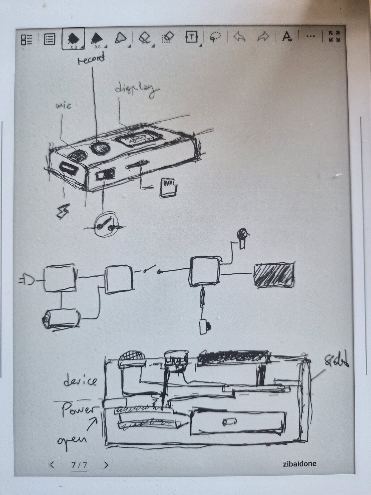
2026-09-05 · phase 0 · status power rail feeds the S3; OLED powered; button on GPIO1
Added a 3.3V→5V boost converter between the TP4056 and the ESP32-S3-Zero. The TP4056's
output is just raw cell voltage (~3.0–4.2V), which is too low to feed the S3's 5V pin and
too high to safely feed 3V3 directly — the boost module resolves both. The slide switch
now sits on the positive line between the TP4056 and the booster, so it gates the whole
converter rather than just the board.
Grounds: booster GND runs to the S3 and to the OLED. The OLED's VCC comes off the S3's
3V3 pin (i.e. the S3's own regulator powers the screen, not the booster). OLED data lines
(SDA/SCL) aren't run yet.
Record button is in: microswitch between GND and GPIO1, not GPIO2 as
originally speced. GPIO1 is not a strapping pin on the S3, so it's a fine choice — docs
updated to match the hardware rather than the other way round.
Next: OLED I2C lines, then the mic, then the first bench-test.
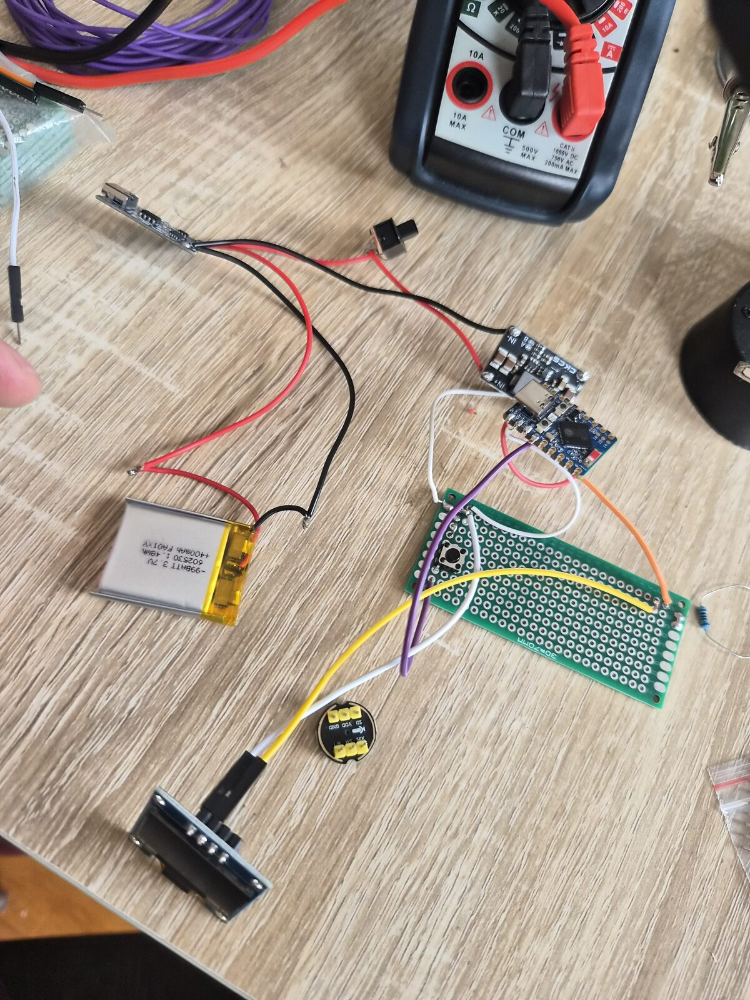
2026-08-09 · phase 0 · status power chain soldered and verified working
Checked the inventory and confirmed the whole BOM is accounted for, then roughly
assembled the power chain — a quick bit of soldering done while supporting my son's
drawing session. Power chain works.
The fun part: today's work was so simple and straightforward that it got messy
when it didn't seem to work — I had no output power. After desoldering and resoldering 2–3
times, I realized one of the multimeter cables (the ground one) was slightly loose, pulled
out just enough to not measure. The power chain had been fine the whole time; the
measurement was the problem.
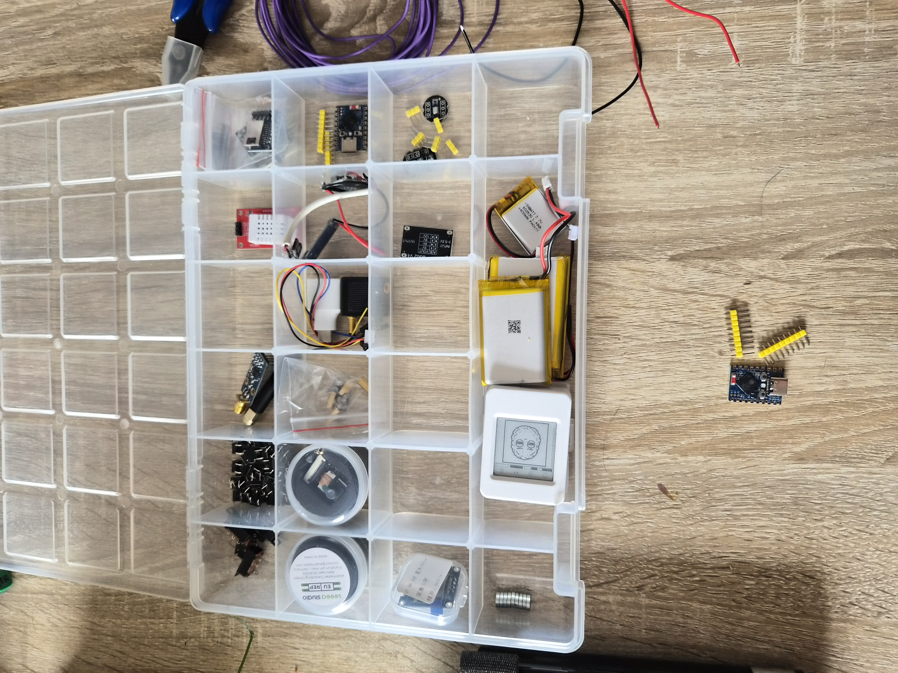
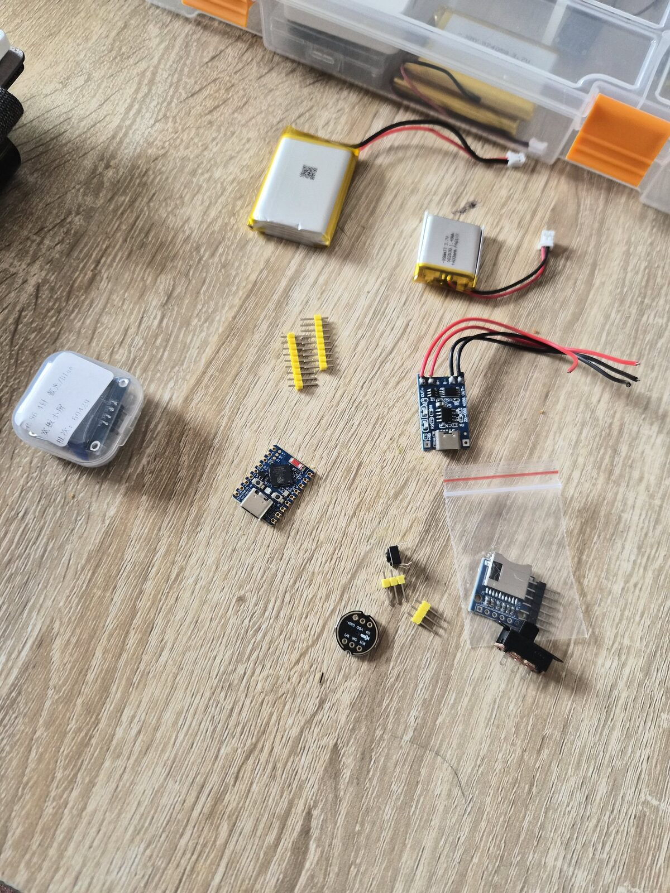
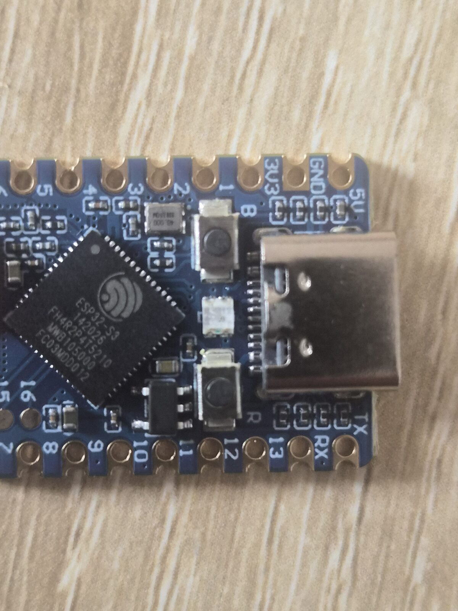
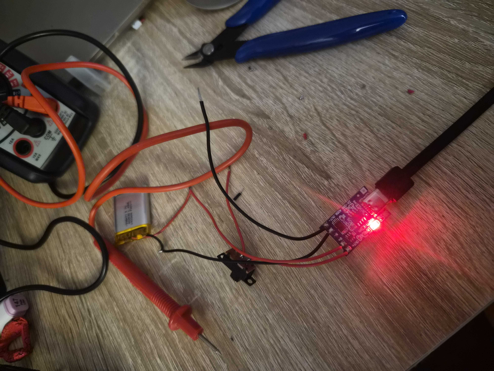
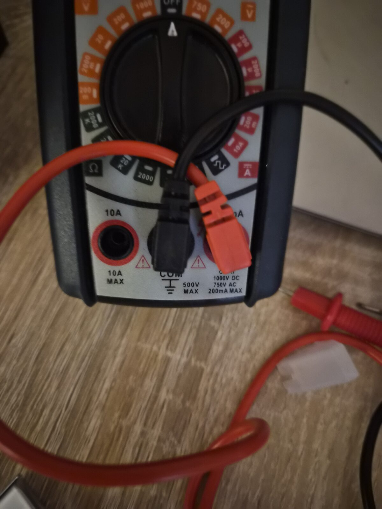
2026-08-08 · phase 0–1 · status docs/scaffolding only, no hardware work logged yet
Set up the repo from the spec: firmware/android/hardware/docs scaffold, pinout, BOM,
roadmap, and agent docs. quantum-basics attached as a submodule. No soldering or
bench-testing done yet — puck parts are in hand except the microSD card and LiPo
(pending purchase). First hardware entry will land once headers are soldered and the
mic/OLED/button bench-test runs.